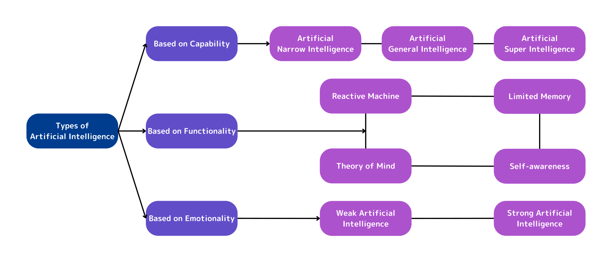
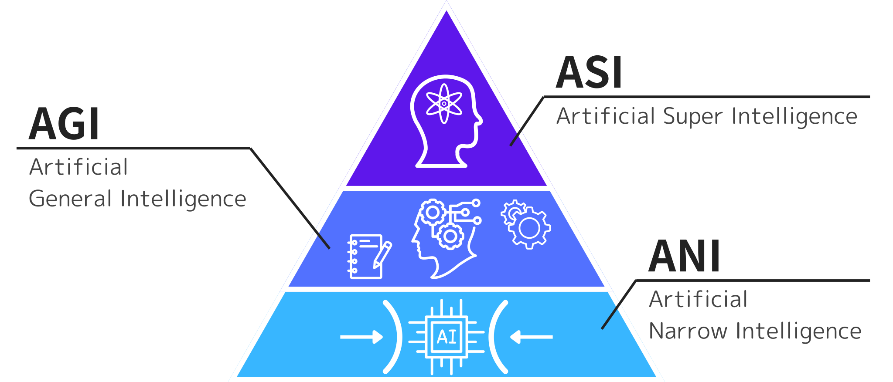
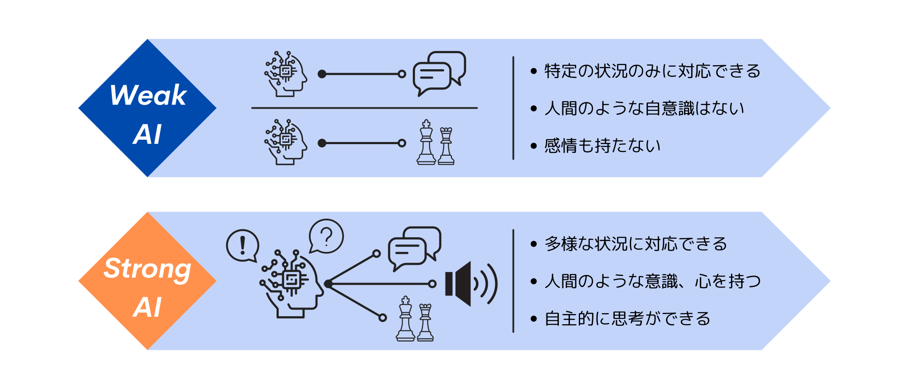
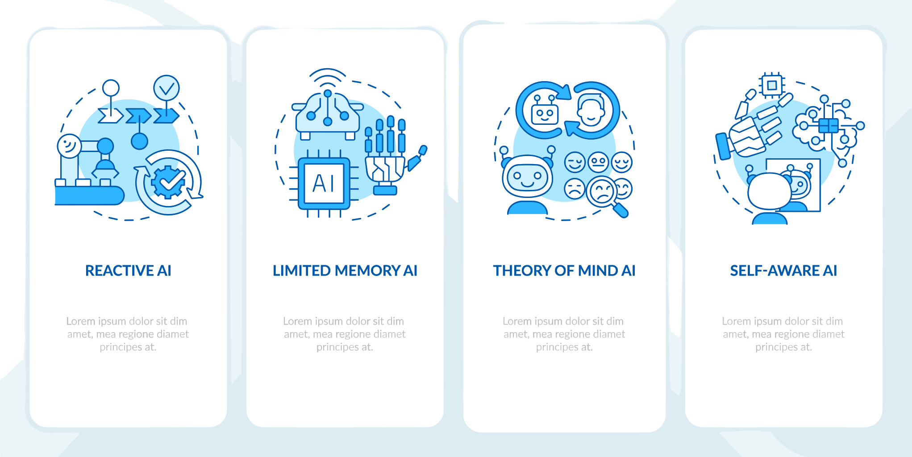

Types of AI
さまざまな種類のAI

AIの開発はさまざまな方面で数多く進行中ですが、そのほとんどはこれから解説する複数のタイプに分類されます。
AIを分類するときは、どういった観点から考えるかでその分け方が変わってきます。今回は、能力的な観点で3つに、心の有無という観点で2つに、さらに機能的な観点で4つに分けて解説します。
能力による分類
まず最初に、能力的な観点での分類について見てみましょう。この分類では、 ”ANI”、 ”AGI”、そして ”ASI” の3つに分けられます。
ANI - ”Artificial Narrow Intelligence”（特化型AI）
「特化型」という名前から分かるように、ANIはある特定の分野に特化したAIです。画像・音声認識、自動運転システム、チャットボットなど多くの種類があり、決まった範囲の中で仕事を行うことを得意としています。 現在実用化されているAIは全て、このANIに含まれます。
AGI - ”Artificial General Intelligence”（汎用型AI）
AGIは、特定の分野に限定されずさまざまな分野の仕事を行うことができるAIです。このAIは、自身がおかれている状況を理解して、何をするべきかを考えることができます。ANIと比べてとても柔軟で、より人間に近いAIであると言えるでしょう。実用化には至っていませんが、今後十数年以内に実現するといわれています。
ASI - ”Artificial Super Intelligence”（人工超知能）

AGIがさらに進化すると、第3ステージであるASIが誕生するといわれています。ASIは人間以上の知能を持っていて、到底人間には解決することができないような課題まで解決できるAIです。ASIは完全に独立していて、自己の目的、そして自己意思決定能力を持っているので、人間の指示に従う必要がありません。 その特徴から、実現した場合には人類にとって大きな影響を与える可能性があるため、注意深く研究が進められています。
心の有無による分類
次に、心の有無による分類を見てみましょう。この観点での分類では、「強いAI」と「弱いAI」の2つに分けられます。これらは、AIが真の意味で「考えることができるのか」を考えるときに使われる用語で、下記のように定義されています。
「強いAI」 …意思を持ち、自分で考えることができるAI
「弱いAI」 …意思を持たず、自分で考えることができないAI
「強いAI」の特徴は、人間のように感情を持ち、人間のような思考ができることです。逆に「弱いAI」は、そういった感情を持たず、人間のような思考の仕方もできません。そして、前述したANIは「弱いAI」、AGIとASIは「強いAI」とされています。
しかし、この分類には少し問題があります。それは、AI（コンピュータ）に意思があるかどうかをどのように判断するのかという問題です。例えばSoftbankのPepper君というロボットは、こちらの話しかけに応じ、感情を認識することができます。一見意志を持って動いているようにも見えますが、実際には内部で決められた処理を行っているだけのコンピュータであり、分類としては「弱いAI」になります。
このように、内部で単純な処理を行っているだけなのに、周りから見ればそのものが意思を持って行動しているように見えてしまうことがあるのです。
ちなみに、現在実用化されているAIはすべて「弱いAI」に分類されていて、「強いAI」はまだ実現に至っていません。
機能による分類
最後に、機能的な観点での分類について見てみましょう。この分類では、「リアクティブ・マシン（Reactive Machine）」、「リミテッド・メモリー（Limited Memory）」、「心の理論（Theory of Mind）」、そして「自己認識（Self-awareness）」の4つに分けられます。
リアクティブ・マシン（Reactive Machine）
リアクティブ・マシンとは、最も基本的なAIです。 ”Reactive”（反応的な）という言葉の通り、周囲のアクションをリアルタイムで読み取って、それに対して結果を返します。記憶を持たないので、過去の経験から学習したりすることがなく、練習によって上達することもありません。 AIの起源はこのタイプのものだとされています。
リミテッド・メモリー（Limited Memory）
第2段階であるリミテッド・メモリーは、過去のデータを保存し、それを自分の知識として使い、予測などを行うことができるAIです。リアクティブ・マシンと異なり「学習」が可能になったため、多くのデータを与えるほど能力が向上していきます。現在実用化されているAIの大部分は、このリミテッド・メモリーのタイプが採用されています。
リミテッド・メモリーの技術によってAIは劇的な進化を遂げましたが、それはまだ最終進化ではありません。AIの学習を可能にさせたリミテッド・メモリーですが、環境の微妙な変化や相手の感情を読み取ったりすることまではできません。そういった高度なことを可能にするのが、「心の理論」です。
心の理論（Theory of Mind）

心の理論は、相手の感情や行動の変化を細部まで認識できる、第3段階のAIです。このタイプのAIは、環境の中にある人や物が感情や行動を変化させることを徹底的に理解する必要があります。それだけではなく、人々の感情、情緒、思考までも完璧に理解しなければなりません。
例えば自動運転では、人間と同じミスをしないためにも、AIはより優れた運転をする必要があります。人間であれば、子供の多い住宅街の道を通るときには、子供の飛び出しなどの危険を考えて速度を落としたりするでしょう。現在のAIではかなり困難ですが、心の理論を理解したAIであれば、そのようなこともたやすく解決できるようになります。
しかし、その構造の複雑さから、まだ心の理論を完全に完成させることはできていません。
自己認識（Self-awareness）
前述した心の理論をさらに超えて、AIが自己を認識できるようになった段階が、自己認識AIと呼ばれるものです。自己認識が可能になったAIは、心の理論を理解したAIと同じように人間の感情を感知することができます。それに加えて、内部意識や状態、状況までもを理解することができるようになります。ただ、このAIはまだ仮説としてしか存在していません。